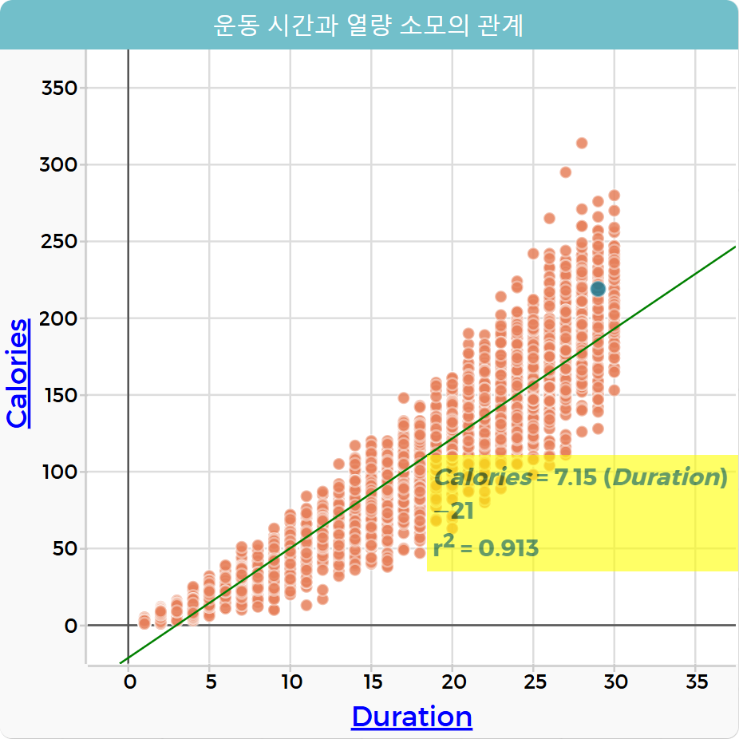

칼로리 데이터와 운동 데이터의 시각화(산점도)
산점도는 두 개의 수치형 변수 간의 상관관계를 시각화하기 좋은 도구이다. 코답을 사용하여 산점도를 표현하는 방법을 알아보자.
1. 문제 상황 이해하기
칼로리와 운동 데이터에 있는 속성 중 운동 시간 및 심장 박동수, 체온과 열량 소모와의 관계를 분석하려고 한다.
2. 데이터 수집하기
빅데이터 전처리 과정을 통해 정리한 칼로리-운동 데이터를 사용한다.

3. 데이터 탐색하기
- ①팝업창의 새 문서 버튼을 클릭한다.
-
②
오른쪽 상단의 실습 파일 보기 버튼(
 )을 클릭하여
calories_exercise.csv의 주소를 복사(
)을 클릭하여
calories_exercise.csv의 주소를 복사(  )한다.
)한다.
-
③
메뉴(
 )의 ‘가져오기’에서 URL 탭을 선택하여 복사한 주소를 붙여 넣은 뒤 데이터 가져오기 버튼을 클릭한다.
)의 ‘가져오기’에서 URL 탭을 선택하여 복사한 주소를 붙여 넣은 뒤 데이터 가져오기 버튼을 클릭한다.
4. 데이터 시각화하기
-
①
그래프 아이콘(
 )을 클릭하여 새로운 그래프를 생성한다.
)을 클릭하여 새로운 그래프를 생성한다.
- ②임의의 그래프가 생기면 그래프 이름을 더블 클릭하여 'cases'에서 ‘운동 시간과 열량 소모의 관계’로 변경한다.
- ③그래프의 x축 속성을 클릭하여 Duration 속성을 선택한다.
- ④그래프의 y축 속성을 클릭하여 Calories 속성을 선택한다.
-
⑤
 를 클릭하고 최소제곱선을 선택한다.
를 클릭하고 최소제곱선을 선택한다.
5. 결과 해석하기
최소제곱선을 표시한 산점도를 보고 그래프의 결과를 해석해 보자.

시각화한 결과를 보면, 운동 시간이 짧으면 열량 소모가 적고, 운동 시간이 길면 열량 소모가 많은 것을 확인할 수 있다.
즉 운동 시간과 열량 소모는 서로 관계가 있고, 관계가 있다는 것은 운동 시간을 통해 열량 소모를 예측하는 것이 가능하다는 의미이다.
이 관계는 최소제곱선을 통해서도 확인할 수 있다. 최소제곱선이 일정한 기울기를 갖는 일차함수로 표시되면 두 속성은 관계가 있다고 해석할 수 있다.
Tip!
최소제곱선: 두 변수의 관계를 확인할 수 있는 지표로 이 선의 기울기가 1에 가까울수록 두 변수는 상관관계가 높다고 할 수 있다.
최소제곱선이라고 부르는 일차함수의 기울기가 그래프에 r²으로 표시되어 있다.
r²은 결정 계수라고도 하는데, 한 변수로 다른 변수를 예측한 결과에 대한 객관적 정확도를 나타낸다.
r² = 0.913은 기울기가 1에 가깝다는 것과 예측한 결과가 91.3%으로 정확도가 높다는 것을 의미한다.